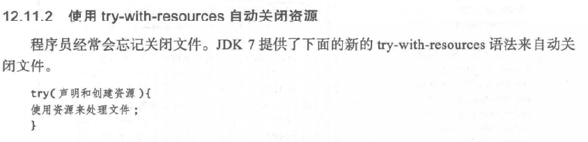
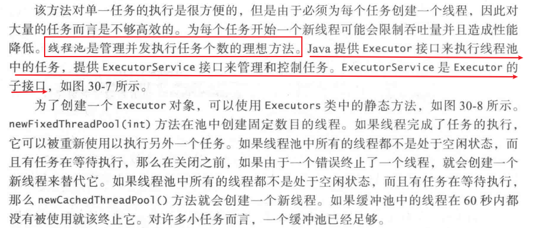

Java基础知识复习¶
概述¶
-
一个Java程序至少要有一个类
-
为了运行某个类，这个类必须要有main方法
-
源文件名和公用类名必须完全相同
-
编译和运行
javac Hello.java
java Hello
- Java源程序区分大小写
基础知识¶
从控制台读取数据
Scanner input = new Scanner(System.in);
声明常量
final datatype CONSTANTNAME = VALUE;
基本数据类型有8种：
- int
- short
- long
- byte
- char
- float
- double
- boolean
【注意】
- 使用时，long型加个l，float加个f
- 缩窄需要显示转换
String是引用类型
文档注释以/**开始，以*/结束
字符串转数字：
int intValue = Integer.parseInt(intString);
double doubleValue = Double.parseDouble(doubleString);
格式化输出
System.out.printf(...);
%c -> 字符;
%b -> 布尔值;
%d -> 整数;
%f -> 浮点数;
%e -> 浮点数，科学计数法;
%s -> 字符串;
switch表达式支持
1.5之前：int，short，char，byte
1.5：枚举类和上述的包装类
1.7：支持String
输入输出重定向
java ClassName < input.txt
java ClassName > output.txt
也可以同时用
java ClassName < input.txt > output.txt
定义方法：
修饰符 返回值类型 方法名(参数列表){
// 方法体
}
main方法是Java虚拟机调用的
方法重载：必须有不同的参数列表
方法签名：方法名+参数列表
for-each循环：
for(doule u: myList){
// 一些语句
}
数组创建之后大小不能更改！
创建二维数组时必须指定第一个下标！
数组复制的三种方法：
- 循环语句逐个来
-
使用
System类的arraycopy静态方法（复制前需要创建目标数组，同时分配好空间） -
使用
clone方法
数组名作为方法的参数，必须加括号！传的是引用
Arrays类：
-
java.util.Arrays类有很多静态方法 -
sort方法
Arrays.sort(数组名);Arrays.sort(数组名, beginIndex, endIndex);
- binSearch二分查找法
Arrays.binSearch(数组名, key);
-
equals方法
-
fill方法填充数组
类和对象¶
-
两个类可以在同一个文件，但是只有一个公共类！
-
想要new一个对象，必须提供构造方法！
-
有个隐含的无参构造，只有啥构造方法都没写的时候，才会用它。
-
类的数据成员有默认值！引用类型的是
null -
静态变量可以被类的所有实例共享
-
静态方法使用时无须创建类的实例
-
类的常量应该声明为
final static -
静态方法和静态变量可以通过引用变量（类的实例）或它们的类名（推荐，也是标准用法）来调用
-
静态方法里面只能使用静态变量和静态方法
-
可见性修饰符
- public
- private
- protected
- 啥都不写，那就包内可见
文件IO以及常用的几个类¶
String类¶
valueOf方法可以将字符和数字转字符串- 对象一旦创建，值就不能改了
8种基本的数据类型都有包装类
StringBuilder类和StringBuffer类¶
- 可追加，可修改，可删除
StringBuffer修改缓存区的方法是同步的，适合多线程并发访问，保证数据一致性StringBuilder适合单线程访问
文件类File¶
- 不包含读写文件的方法
- 包含了很多获取文件属性的方法
- 重命名和删除文件的方法也有
- 创建一个File实例不会在机器上创建一个文件出来，而且不管这个文件是否存在，文件对象都能创建成功
Java的I/O类¶
Scanner类和PrintWrite类¶
Scanner类¶
- 一般是从
System.in创建，但是也可以从字符串，文件创建 - 读完文件最好关闭，可以释放资源


PrintWrite类¶
- 用来创建一个文件并向文件中写数据
- 如果文件存在，则会删除原有的内容
- 必须使用close方法关闭文件，不然文件不能正确保存
import java.io.File;import java.io.FileNotFoundException;import java.io.PrintWriter;public class WriteData { public static void main(String[] args) throws FileNotFoundException { File file = new File("data.txt"); if(file.exists()){ System.out.println("文件已存在"); System.exit(0); } PrintWriter output = new PrintWriter(file); // 一些语句 output.close(); }}

二进制I/O¶

FileInputStream和FileOutputStream¶

FilterInputStream和FilterOutputStream¶
DataInputStream和DataOutputStream¶

BufferedInputStream和BufferedOutputStream¶

ObjectlnputStream 类和ObjectOutputStream 类¶
- ObjectlnputStream 类和ObjectOutputStream 类可以用于读/ 写可序列化的对象
RandomAccessFile 类¶
- 允许在文件的任意位置上进行读写
ArrayList¶
- 存储不定个数的对象（弥补了数组一旦创建大小就固定的遗憾）
- 不能存储基本数据类型（那就用包装的类呗）
- 有很多使用的方法，比如contains方法

包装类¶
- 包装类没有无参构造
- 包装类的实例是不可变的
BigInteger类和BigDecimal类¶
- 不可变的
- 可表示任意大小的数
关于对象的思考¶
this引用¶
指向调用对象本身的引用
- 引用类的隐藏数据域（参数的变量名和数据域名相同，那数据域就被隐藏了）
- 让构造方法调用同一个类的另一个构造方法（this语句需要放在最前面）
类的设计原则¶
- 内聚性（单个职责）
- 一致性（设计风格一致，显式提供公共默认无参构造）
- 封装性（数据域私有）
- 清晰性
- 完整性
- 实例和静态
- 某个方法如果不依赖具体的实例，那就应该是静态的
- 不用构造方法初始化静态数据域，使用set方法设置
继承和多态¶
Java不支持多继承，想要多继承，就用接口
super关键字：调用父类的方法和构造方法
子类可以重写父类的方法，但是，方法名，返回值类型，参数类型都不能变
静态方法不能重写
可以使用final关键字声明某个类或者方法是不可被继承或者不能被重写的
多态¶
总是可以将子类的对象初始化基类的引用
动态绑定¶
lambda表达式¶

异常处理¶
try{
statements;
}
catch(Exception1 exVar1){
statements;
}
catch(Exception2 exVar2){
statements;
}
//...
catch(ExceptionN exVarN){
statements;
}
finally{
}

抽象类和接口¶
接口：为了定义多个类（尤其是不相关的类）的共同行为
抽象类：很抽象的类，只定义不实现
抽象类¶
abstract关键字
public abstract class 类名{ // 实现}
-
不能new对象
-
构造方法
ptotected（因为只能被自己的子类用） -
有抽象方法必为抽象类
-
可以有具体的方法，必有抽象方法
-
父类是具体的，但是子类可以是抽象的，如
Object类和GeometricObject类 -
如果父类的方法是具体的，子类可以把方法重写为抽象的
-
抽象类可以作为一种数据类型
接口¶
- 只包含常量和抽象方法
- 数据域都是
public final static，方法都是public abstrat - 接口里面啥都没写叫标记接口，用来表示一个类有某个属性
- 接口可以继承其他接口
如果一个类实现了一个接口，这个接口就类似于该类的父类。
可以把接口当做数据类型使用，将接口类型的变量转换为它的子类。
泛型（E或T）¶
参数化类型
能在编译时检测出错误
泛型类型必须是引用类型
Java集合框架¶
就是通用的数据结构
- 两大类：集合（collection)和图(map)
Collection


- 两个对象相同，则哈希码必定相同
迭代器

Set接口¶
没有重复的元素
接口实现类：
HashSet- 无序集合
- 元素可以为null
- 基于哈希表实现的，保证元素不重复
- 单个元素操作O(1)
LinkedHashSet- 链表实现
- 有序集合，顺序是插入时的顺序
TresSet- 有序的
- 可以给元素强加一个顺序
List接口¶

接口实现类：
ArrayList- 使用数组存储元素，数组是动态创建的
- 可变大小的数组
- 通过下标访问，随机访问效率高
- 不会在线性表的表头插入或者删除元素，用这个
- 1.5倍扩容
LinkedList- 链表实现
- 可以从表两端操作元素
如果只是简单提取元素或者只是在线性表尾部插入删除，用ArrayList
任意位置插入删除元素，用LinkedList
集合和线性表的静态方法：

Queue¶
Queue接口
接口实现类：
LinkedList
-
PriorityQueue优先队列（最高优先级的先出队） - 就是个堆
- 不允许null值
- 线程不安全
- 出入队时间复杂度O(log(n))
- 元素默认升序排列
- 最小数值的元素优先出队
- 没有实现可克隆和可序列化接口
Vector¶

- 线程安全的，只要是关键性的操作，方法前面都加了synchronized关键字
Stack¶

Map接口¶
键可以是任意类型的对象
键是惟一的
具体实现类：
初始顺序：插入时的顺序
访问顺序：被最后一次访问时的顺序
HashMap¶
-
无序
-
操作单个元素，很高效
-
非线程安全，并发情况下，HashMap进行put操作会引起死循环，导致CPU利用率接近100%
-
底层数据结构：数组+(链表、红黑树)，jdk8之前是用数组+链表的方式实现，jdk8引进了红黑树
-
默认初始长度是16，key和value都允许null
-
内部实现数组是Node[]数组，上面存放的是key-value键值对的节点。HashMap通过put和get方法存储和获取。
-
jdk8中put方法：先计算key的哈希值，然后调用putVal方法==>先判断哈希表是否为空，为空就扩容，不为空计算出key在哈希表中的位置i，看table[i]是否为空，为空就直接新建一个节点放进去，不为空判断当前位置的hash值，key和要插入的是否相同，相同则根据要求看是否覆盖val，不相同就查看table[i]是否是红黑树节点，如果是的话就用红黑树直接插入键值对，如果不是开始遍历链表插入，如果遇到hash值,key相同的，根据要求看是否覆盖val，否则直接尾插法插入，如果链表长度大于8，转为红黑树结构，执行完成后看size是否大于阈值threshold，大于就扩容，否则直接结束
final V putVal(int hash, K key, V value, boolean onlyIfAbsent, boolean evict) { Node<K,V>[] tab; //节点表 Node<K,V> p; //工作指针 int n, i; //如果hash表未初始化，或者表的长度为0，则给一个默认的容量16，这里将n初始化为表的长度 if ((tab = table) == null || (n = tab.length) == 0) n = (tab = resize()).length; //计算在hash表中的位置，如果这个位置为空，则插入这个节点 if ((p = tab[i = (n - 1) & hash]) == null) tab[i] = newNode(hash, key, value, null); else { Node<K,V> e; K k; //判断桶中第一个元素（可以认为是链表头）的hash值，key值和要插入的hash值，key值是否相同，相同就记录下来，根据条件看是否覆盖val值 if (p.hash == hash && ((k = p.key) == key || (key != null && key.equals(k)))) // 将第一个元素赋值给e，用e来记录 e = p; //判断是否为红黑树节点 else if (p instanceof TreeNode) e = ((TreeNode<K,V>)p).putTreeVal(this, tab, hash, key, value); //链表节点 else { for (int binCount = 0; ; ++binCount) { //遍历链表，如果找到hash，key相同的，记录下这个节点，跳出循环，没找到就尾插，尾插之后判断是否需要转为红黑树 //到达链表尾，插入这个节点 if ((e = p.next) == null) { p.next = newNode(hash, key, value, null); //链表中节点的数量到达阈值8，变成红黑树 if (binCount >= TREEIFY_THRESHOLD - 1) // -1 for 1st treeifyBin(tab, hash); break; } if (e.hash == hash && ((k = e.key) == key || (key != null && key.equals(k)))) break; p = e; } } if (e != null) { // existing mapping for key V oldValue = e.value; // onlyIfAbsent为false或者旧值为null if (!onlyIfAbsent || oldValue == null) e.value = value; afterNodeAccess(e); return oldValue; } } ++modCount; if (++size > threshold) resize(); afterNodeInsertion(evict); return null;}
- 如何扩容：第一步把数组长度变为原来的两倍，jdk8时，不用重新计算hash，只用看看原来的hash值新增的一位是零还是1，如果是1这个元素在新数组中的位置，是原数组的位置加原数组长度，如果是零就插入到原数组中。
LinkedHashMap¶
- 链表实现
- 支持排序
TreeMap¶
- 遍历排好序的键时很高效
- 底层数据结构是一个红黑树，每个key-value都作为一个红黑树的节点
- 在调用TreeMap的构造函数时没有指定比较器，则根据key执行自然排序
为什么HashMap中String、Integer这样的包装类适合作为key？¶
String、Integer等包装类的特性能够保证Hash值的不可更改性和计算准确性，能够有效的减少Hash碰撞的几率~
因为
- 它们都是final修饰的类，不可变性，保证key的不可更改性，不会存在获取hash值不同的情况~
- 它们内部已重写了equals()、hashCode()等方法，遵守了HashMap内部的规范
出ArrayList,LinkedList的存储性能和特性¶
这道面试题，跟ArrayList,LinkedList，就是换汤不换药的~
- ArrayList,使用数组方式存储数据，查询时，ArrayList是基于索引(index)的数据结构，可以直接映射到，速度较快；但是插入数据需要移动数据，效率就比LinkedList慢一点~
- LinkedList,使用双向链表实现存储,按索引数据需要进行前向或后向遍历，查询相对ArrayList慢一点；但是插入数据速度较快。
- LinkedList比ArrayList开销更大，因为LinkedList的节点除了存储数据，还需要存储引用。
HashMap在JDK1.7和JDK1.8中有哪些不同？¶
ArrayList集合加入1万条数据，应该怎么提高效率¶
因为ArrayList的底层是数组实现,并且数组的默认值是10,如果插入10000条要不断的扩容,耗费时间,所以我们调用ArrayList的指定容量的构造器方法ArrayList(int size) 就可以实现不扩容,就提高了性能。
多线程¶
在java中，每个任务都是Runnable接口的一个实例，线程本质上是便于任务执行的对象
任务类：
- 必须实现
Runnable接口（只包含一个run方法，需要程序员自己定义） - 任务必须从线程运行
public class TaskThreadDemo {
public static void main(String[] args) {
PrintChar printA = new PrintChar('a', 100000);
PrintChar printB = new PrintChar('b', 100000);
PrintNumber printNumber = new PrintNumber(6, 100000);
Thread thread1 = new Thread(printA);
Thread thread2 = new Thread(printNumber);
Thread thread3 = new Thread(printB);
thread1.run();
thread2.run();
thread3.run();
}
}
Thread类¶
线程池¶
- 使用线程池可以高效执行任务
- 为每个任务开一个新线程可能会限制吞吐量并且造成性能降低


public static void main(String[] args) {
ExecutorService executor = Executors.newFixedThreadPool(3);
executor.execute(new PrintChar('a', 100));
executor.execute(new PrintChar('b', 100));
executor.execute(new PrintNumber(5, 100));
executor.shutdown();
}
【注意】
- 如果只需要为一个任务创建一个线程，用Thread类
- 如果需要为多个任务创建线程，用线程池
Javabean¶
最低要求：
- 公共类
- 必须有公共无参构造
- 实现
Serializable接口
写的时候：
- 属性私有
- get和set方法
一些其他的知识点：¶
- 当编译一个 .java 文件时，.java 文件的每个类都会有一个输出文件。每个输出的文件名和 .java 文件中每个类的类名相同，只是后缀名是 .class。
- 在 Java 中，可运行程序是一组 .class 文件，它们可以打包压缩成一个 Java 文档文件（JAR，使用 jar 文档生成器）。Java 解释器负责查找、加载和解释这些文件。
- 如果你使用了 package 语句，它必须是文件中除了注释之外的第一行代码
- Java 包名按惯例一律小写，即使中间的单词也需要小写
- 按照惯例，package 名称是类的创建者的反顺序的 Internet 域名。
- 如果通过
*导入了两个包含相同名字类名的类库 => 使用全限定名